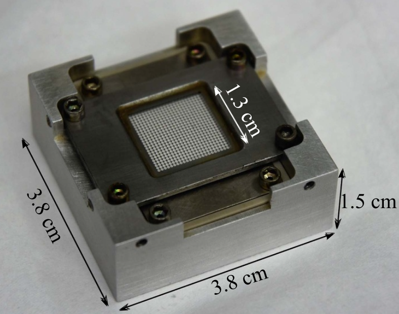
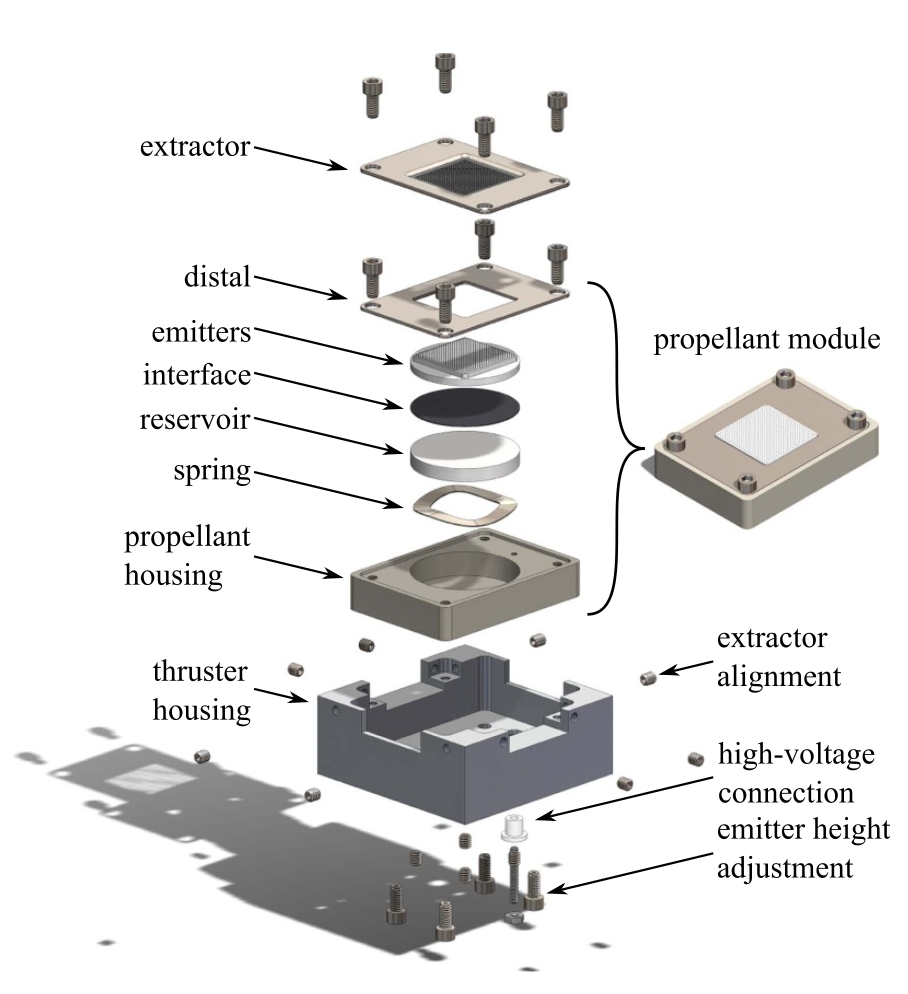

One aspect I have come to appreciate about mechanical design is that developing a mechanism that works is often easier than determining whether it's the right solution. A design can function as intended while still being unnecessarily complicated, difficult to manufacture, or poorly integrated to the larger system. I've encountered this throughout my MEng project, where I am redesigning the test assembly for an electrospray thruster for cubesat propulsion. Rather than focusing solely on the final design, I wanted to document how my approach has evolved, particularly how individual design decisions have forced me to reconsider the problem itself.
I began by spending considerable time reading and annotating the research paper on the AFET-2, the baseline thruster I would be redesigning, where I worked to understand the underlying physics, the role of each component, and how components interacted. Electrospray thrusters use strong electric fields to extract and accelerate charged particles from a liquid propellant, making component alignment particularly important. This initial research gave me enough understanding of the system to begin identifying opportunities for mechanical improvement. Once I felt I had a solid understanding of the system, I moved into shortcomings of the existing design, particularly its time-consuming alignment mechanisms and the risk of electrical shorting caused by liquid propellant bridging conductive components.


Vertical Adjustment Mechanism
My first focus was the propellant housing's vertical adjustment mechanism. The original design used four set screws to control the gap between the emitter array and extractor grid, a critical dimension affecting electric field strength, emission performance, and the risk of electrical shorting. While necessary, this adjustment mechanism seemed unnecessarily complicated, and required a digital microscope to confirm parallel alignment between the propellant stack and extractor grid.
I proposed replacing the four with a single, wider diameter set screw, but quickly recognized that doing so would remove constraints that helped maintain the housing's parallel orientation. Without additional guidance, the housing could tilt or shift laterally during adjustment. To address this, I incorporated a small recessed locating feature in the propellant housing to guide the screw into its intended contact point, along with a plus-shaped, poka-yoke-inspired guide between the propellant and thruster housings.
This now separated the functions of positioning and guidance: the screw controlled vertical movement, while the guide geometry constrained unwanted degrees of freedom. Of course this introduced new manufacturing and tolerancing considerations, particularly ensuring sufficient clearance for smooth vertical adjustment while minimizing unwanted lateral or angular movement. These would need to be evaluated before finalizing the design, which I am yet to fully evaluate, but will be next once my design is finalized and I move into GD&T.
Extractor Grid Adjustment
I next addressed the extractor grid, whose planar position was originally controlled by eight small set screws. My goal was to reduce this to two screws, each capable of controlling positive and negative displacement along one axis.
Drawing inspiration from XY positioning stages and clamping mechanisms, I developed a captive screw concept. Capturing the screw head would allow it to push and pull the extractor bidirectionally with a single screw, while permitting transverse movement within the retaining bracket so that adjusting one axis wouldn't constrain the other.
My initial design placed this mechanism as an external feature outside of the thruster housing. During a design review, however, my advisor highlighted a problem I hadn't sufficiently considered. The external adjustment hardware, particularly its conductive components, could interfere with testing. Although the mechanism might work mechanically, it wasn't necessarily compatible with the system's broader requirements. This became the biggest turning point in the project thus far.
Reconsidering the Design
I realized that I had largely been treating the original assembly as a design that needed optimization, rather than questioning whether its underlying configuration was the best possible. I returned to the fundamentals and asked five questions: What are the underlying physics? What are the necessary components? How do these components interact? What are the actual design constraints? What are the existing issues with the current design?
This shifted my thinking toward a more ground-up redesign. From here I began asking what each part fundamentally needed to accomplish.
Distal Electrode Redesign
One of the most important results of this exercise was regarding the distal electrode. A major failure mode in the original assembly was electrical shorting between the planar distal plate and the extractor grid when ionic liquid created a conductive bridge.
Looking more closely at the distal's function, I realized that it fundamentally needed to maintain electrical contact with the liquid propellant, and that it didn't necessarily need its original geometry. This led me to a cylindrical distal geometry integrated around the reservoir, reducing the exposed conductive surface area.
I then developed a cover plate that would shield the distal's remaining exposed ring while simultaneously securing the propellant stack from the emitter array down to the propellant housing floor. Instead of designing separate components for both protection and retention, I was able to combine those functions into one feature.
Refining the Planar Adjustment Mechanism
I then returned to the extractor grid's planar adjustment, this time keeping the mechanism internal to the housing. My original captive-screw approach presented another packaging challenge: because the screws extended across the extractor, their paths intersected, requiring them to be staggered vertically.
Reorienting the retaining brackets outward eliminated that interference and allowed both screws to occupy the same height. However, finding or manufacturing the necessary offset brackets at this scale would be difficult. This added unnecessary complexity and made me question whether capturing the screw head was really necessary for bidirectional adjustment.
I began exploring a spring-preloaded system, where an adjustment screw pushes the extractor grid against an opposing spring. The spring would allow for bidirectional adjustment with a single screw, eliminating the need for captive brackets. However, adjusting one axis could bend the spring on the other, introducing unwanted shear forces, friction, and rotation.
Further research led me to spring-loaded ball plungers, which are a compression spring inside a small threaded housing with a ball at the contact point. The housing guides the spring axially, while the ball can roll or slide against the extractor during perpendicular movement.
This would allow both plungers and adjustment screws to thread directly into the thruster housing, significantly reducing the number of components and custom features. Since positioning adjustment of the extractor grid will be a fraction of a millimeter, miniature ball plungers appear promising.
I am now evaluating their stroke, preload, contact forces, and the potential for friction and unwanted rotation during adjustment. The concept still needs mechanical validation to confirm that the spring force is sufficient and the extractor can move without compromising alignment.
Lessons From the Process
The biggest lesson from this process thus far has been that mechanical design isn't simply about developing solutions, but continually questioning the assumptions behind them. My initial approach focused on replacing individual mechanisms with more efficient ones. As the project progressed, I began thinking more about load paths, degrees of freedom, manufacturing limitations, component interactions, and if certain mechanisms were even necessary.
Several of my most useful design changes came recognizing opportunities to eliminate complexity. The design isn't finalized yet, but this process has reinforced my belief that the most important progress might just come from reconsidering the problem you've been trying to solve.